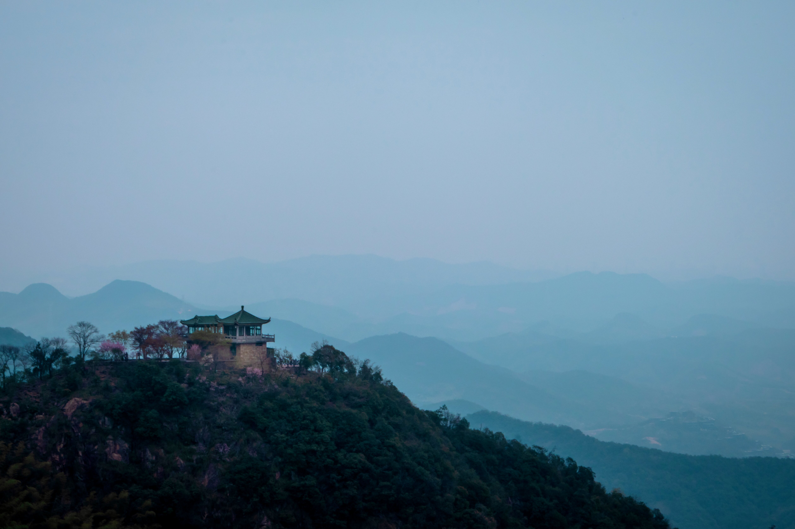

三月，缺了烟雨飘摇的南方——烟雨的诗意固然是美的，却不免扰了出游的兴致。迫于天气预报的步步紧逼，目的地从湖州登山辗转至无锡赏樱，又在最后一刻得到上天赦免而回归初心。事实上，旅途的终点似乎也并非那么令人在意的因素。历经三年的蛰伏穴居，想来出游的意义早已不仅着眼于地域本身。
因此，出发前除了历史书上萦绕耳畔的“苏湖熟，天下足”之外，未做功课的我对于终点着实一无所知。也是在昏昏沉沉间听到一两句关于剑池的讨论，才恍惚意识到了莫干山与那两位铸剑师的某种关联。魏哥聊起了鲁迅的《铸剑》，而我脑中闪过的却是《眉间尺》——于事后发现确实是同一篇作品——三头缠斗的场景在幼小心灵烙下的印记，致使其在我心间成了《故事新编》的另一个代名词。
出行前一晚，久违地擦拭了两个镜头。回想了下特意为拍照而迈出的旅途，上一次竟已不知是何年。然而山并不留情面，虽无雨水叨扰，却安排了雾气严阵以待。索然拍下远山几处，身心便完全切回到了当下。并非预想中的拾阶而上，只因山脚到山顶是一段缓而长的坡道，长到可以完全将思绪沉浸在那略潮湿而爽冽的清气于肺中的一进一出，沉浸在那阔别远方许久的双腿轮流发力时的大步流星。直至一亭、一台、一树、一花打破水泥路仿佛无止境的单调重复，才能对前进的距离有切实的感受。
山顶被寄予厚望的剑池并未能为回忆再增一抹亮色。黝黑得发光的现代铜像暗示着游客：干将与莫邪确实已远在那近乎传说的时代。而水泥桥下的小池塘也打破了诸如“池水常年累月吐纳剑气令人隐隐不寒而栗”的中二幻想。傍晚时分的寒风提醒我们这是绝佳的避暑胜地——只不过来的时节应当再推迟一个季度。不期而遇的美景，却是在下山前小歇的长亭边——俯瞰山下楼宇被环绕在层峦叠嶂间，不免也生出浩浩乎如冯虚御风的愿想。或许，此刻的我与时间与空间交融，这份存在便超脱了意义本身。
